文字の基本
フォントには和文フォントと欧文フォントがあります
和文フォント
ひらがなや漢字に対応した日本語用のフォントで大きく分けて4種類あります
線の幅に変化があり、うろこと呼ばれる装飾がある「明朝体」飾りがなく、線幅が一定のフォントを「ゴシック体」
書道の筆で書かれたような線の幅のメリハリがある文字の「行書体」手書きのようなフォントを「手書き体」
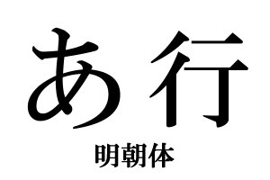
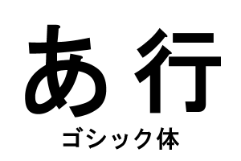
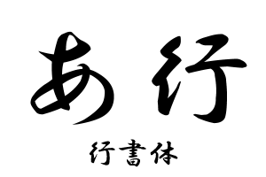
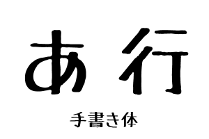
欧文フォント
アルファベットや数字、それと一部の記号のみに対応しているフォントで大きく分けて4種類あります
線の幅に変化があり、セリフと呼ばれる装飾がある「セリフ体」飾りがなく、線幅が一定のフォントを「サンセリフ体」
手書きの書体をモチーフにしたの流れるような文字の「スクリプト体」より手書きのようなフォントを「手書き体」
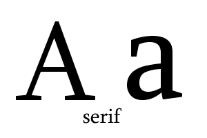
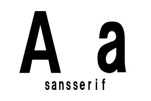
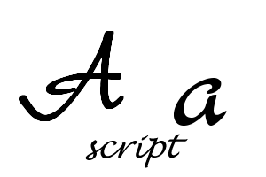
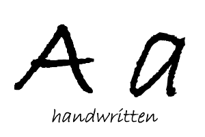
フォントの印象
目的にあったフォントを選ぶことによってより効果的なデザインになります
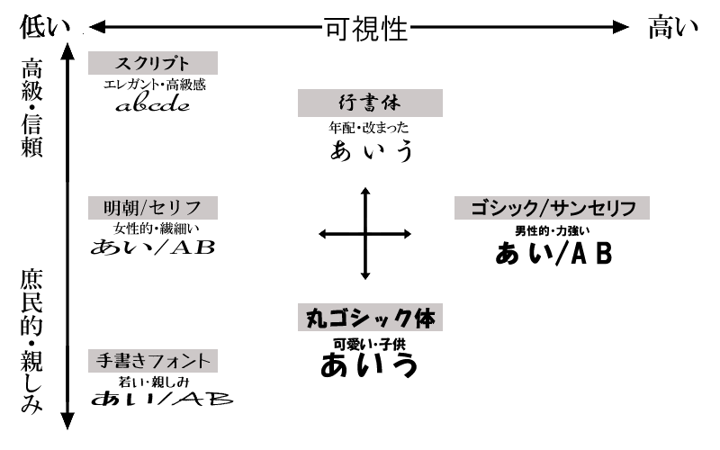
タイポグラフ
読みやすく、美しく文字を配置することや 文字をデザイン要素として用いる手法を指します
行間
文字と文字の縦の間を表します。狭いと雑にみえ可視性が下がるので適切な行間を取る必要があります
文字サイズやフォントにもよりますが一般的には欧文フォントだと120%、和文フォントだと150%～200％が適切とされています
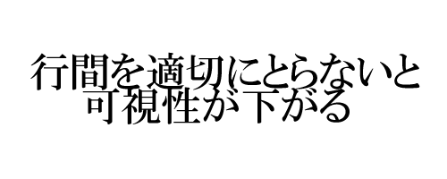
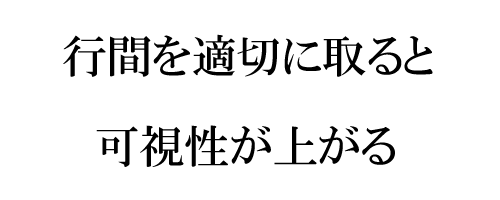
字間
文字と文字の横の間を表します。詰めると文面に緊張感が生まれたり、テンポがよく感じられます
反対に字間を空けるとゆったりとした雰囲気や高級感が感じられます
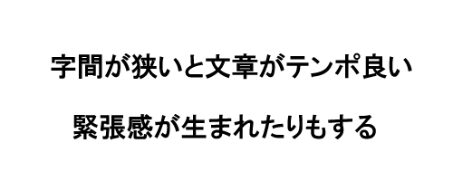
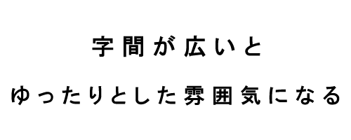
ジャンプ率
本文の文字サイズに対する見出しの文字サイズの比率のことを指します
ジャンプ率が高いと躍動的、若年向けの印象なり逆に低いと高級感のある、大人っぽい印象になると言われています。
印象とは別にジャンプ率が高めのほうが可視性は上がります
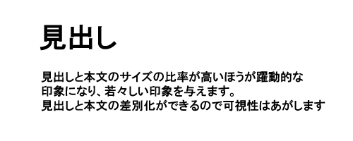
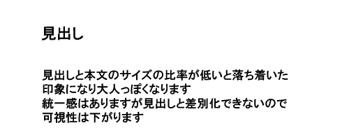
文字揃え
文面を左右や中央に寄せることによってデザインとしての印象や可視性が変わります
レイアウトの基本は左揃えになります。視線は左から右に移動しますので、左に揃っていると安定感を与え可視性が上がります
中央揃えは、視線を集めたい時やアクセントとして使うと有効的です
右揃えは文章などでは可視性が下がるためあまり使いませんが書面などの文書の下に書く署名などで使うことがあります
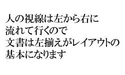
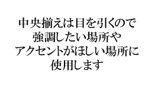
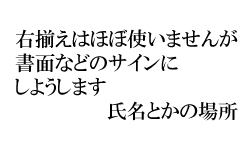